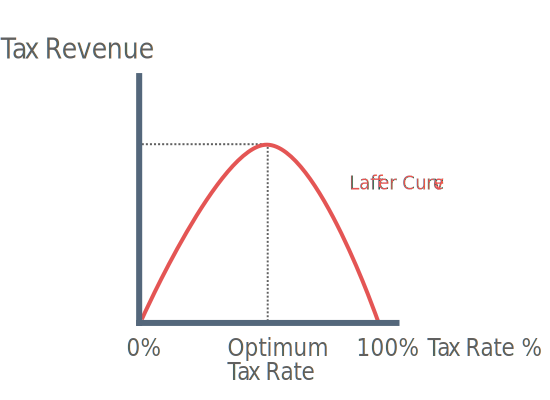

Wealth
Source of Wealth
1) Inheritance
Assets (e.g. property) can be accumulated over generations with each successive generation being wealthier than the proceeding one.
2) Saving
Long-term saving generates wealth.
3) Chance
Instant millionaires because of lottery.
Note: These sources of wealth are also the sources of wealth inequality.
Income
Distribution of income between UK households has become more unequal in recent decades.
Causes of income inequality:
1) Wealth inequality
Wealthier households will be able to earn more income such as dividends and interest from their asset holdings.
2) Level of Skill and qualifications
Individuals with skill and qualifications that are in high demand will earn more. Graduates are expected to earn £100,000 more than non-grads over their lifetime.
3) Difference in earnings
Some workers earn more than other. E.g. full-time workers tend to earn more than part-time.
4) Geographical location
Households in some parts of the country may earn proportionally more than households in other parts.
Government policies to redistribute income
Progressive Taxation
Where the proportion of a person’s income paid in tax increases as income increases.
Advantages
1) Offsets inequality by taxing a higher proportion of income as income increases
2) Social Justice
Some argue that progressive tax is a very equitable (fair). Those who can afford to pay more tax should do so. Progressive taxation therefore meets Adam Smith's canon of taxation, that tax should be equitable
3) Government Revenue
Progressive taxation allows the government to collect a larger amount of tax revenue, this can be reinvested the form of benefits to lower earning households to further close the income inequality gap.
Disadvantages
1) Potential unemployment
If tax rates increase above a certain level, higher income households will decide to work less as their income falls. This can be demonstrated by the laffer curve.

As tax-rate increases above the optimum tax rate, revenue falls and higher earners are likely to work less. This could also encourage higher earners to alter their earnings when disclosing their wages to the government.
2) Ineffective in redistributing income
Progressive taxation, by itself, cannot redistribute income. Progressive taxation merely reduces post-tax income compared to pre-tax differentials.
3) Discourages enterprise
If high income earners are taxed heavily there is less incentive to achieve a higher income. This lack of incentive may discourage potential entrepreneurs to take the risks in order to achieve a higher income.
4) Incentive for tax evasion / Moving headquarters
Higher taxation on wealthier institutions such as multi-national companies create an incentive to avoid tax and perhaps to move company headquarters.
Evaluation of Progressive Taxation
Although progressive taxation may reduce inequalities in the distribution of income, the current U.K. tax system has little effect in reducing the distribution of wealth. Apart from capital gains tax and inheritance tax, wealth is not taxed in the U.K.
Also it is wrong to assume that the U.K. tax system is highly progressive, personal income tax is only slighly progressive. Income tax was made even less progressive in 2013 after the abolition of the highest 50% marginal rate of income tax.
Government policies to redistribute wealth
Wealth Tax
Wealth tax Also known as capital tax, equity tax and net worth tax, it is a levy on the total value of personal assets. Many countries both developed and developing use wealth tax e.g. France (Solidarity tax) and India (1% wealth tax).
Advantages
1) Use it or loose it
Tax on wealth encourages the productive use of assets. If a persons wealth is not invested then it will be taxed.
2) Government Revenue / Redistribution
Tax of wealth is a form on revenue for the government, this revenue can then used for public services or higher benefits thus redistributing income.
Disadvantages
1) Capital flight
The imposition of a wealth tax may result in wealth families moving their capital assets to another country, this is known as capital flight. The result of this is less revenue for the government and less spending in the economy.
2) Crowding Out
Wealth tax pulls assets out of the free market. This reduces the funds available to the private sector to invest in innovation and enterprise.
3) Valuation issues
It is difficult to value some assets e.g. art and classic vehicles. The government may therefore under of over tax peoples wealth.
Trickle-down Effect
The trickle-down argument assumes that the highly wealthy contribute to the good of the economy.
Argument for trickle-down
1) Benefit to low income groups
The very rich have a high disposable income that is spent in the economy. The money feeds into higher demand and therefore higher employment thus improving income for others in society.
2) Encouraging enterprise
Firstly, the very wealthy may provide an incentive for entrepreneurs to take the risks in order to live a similar lifestyle. Secondly, wealthy people themselves may use their assets in an entrepreneurial way, thus creating jobs and opportunities.
Criticism of trickle-down
1) Effect is over emphasised by the wealthy
High income earners have a high marginal propensity to save. The amount of spending that actually takes place by the very wealthy may be over emphasised.
2) Higher relative poverty
Higher wealth leads to higher income, therefore the very wealth become even wealthier as income is saved. Without government intervention there will be greater income inequality and in turn higher relative poverty.